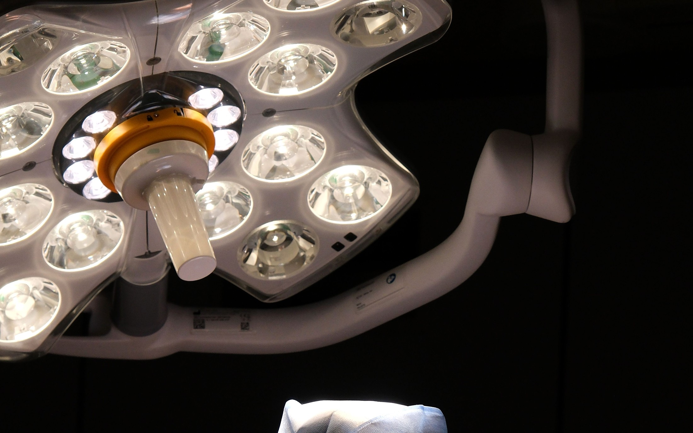
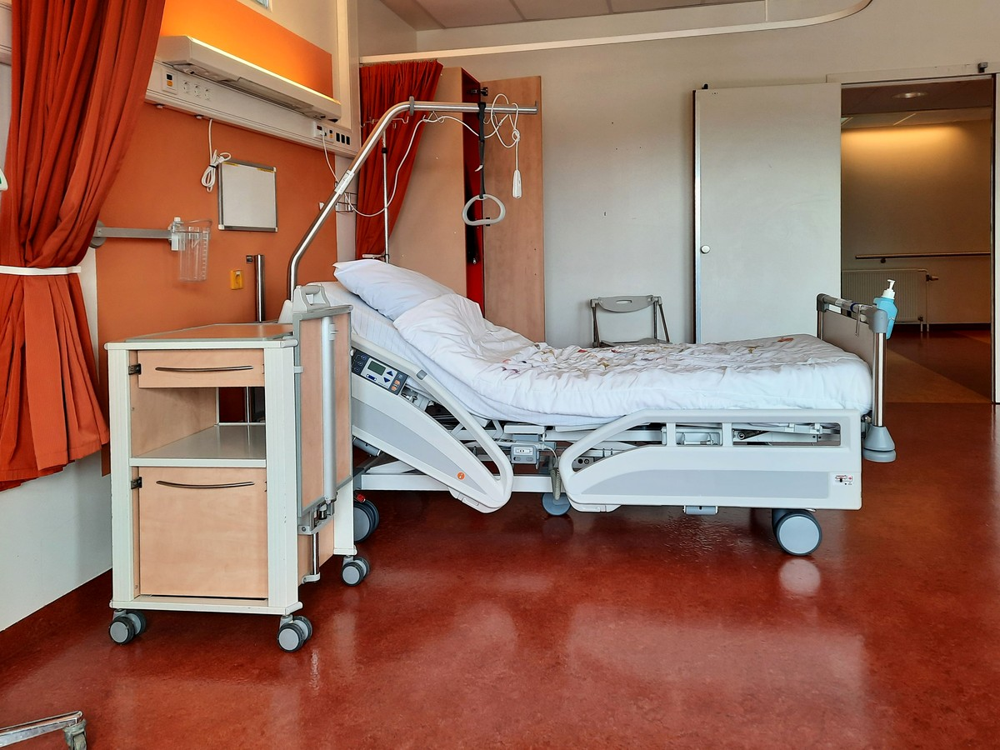
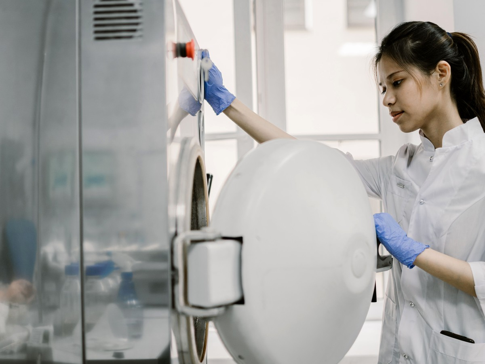
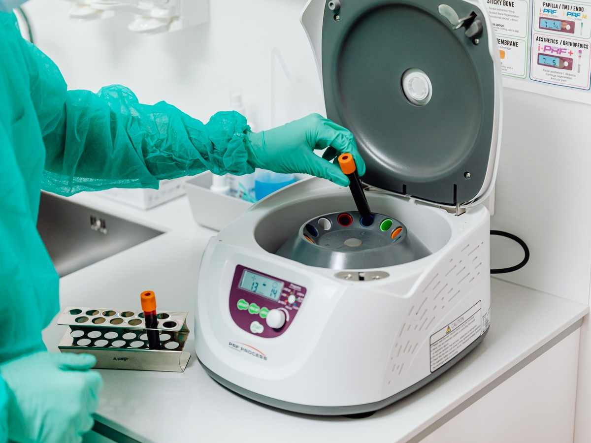
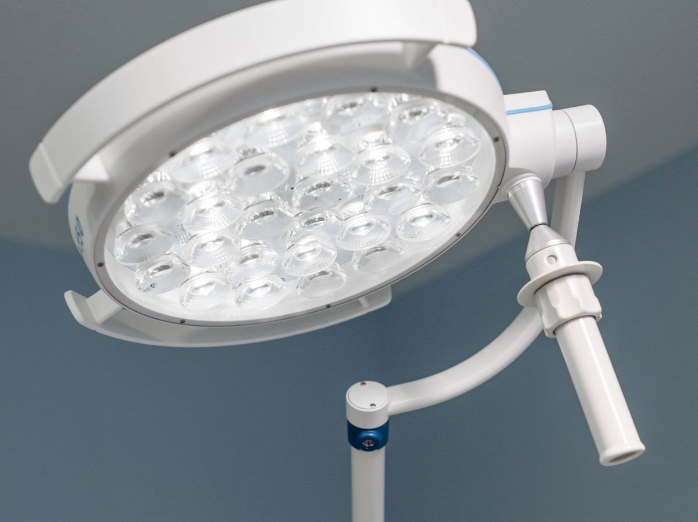
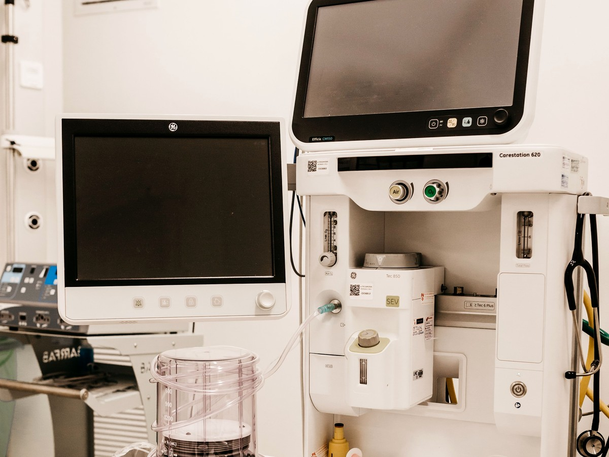
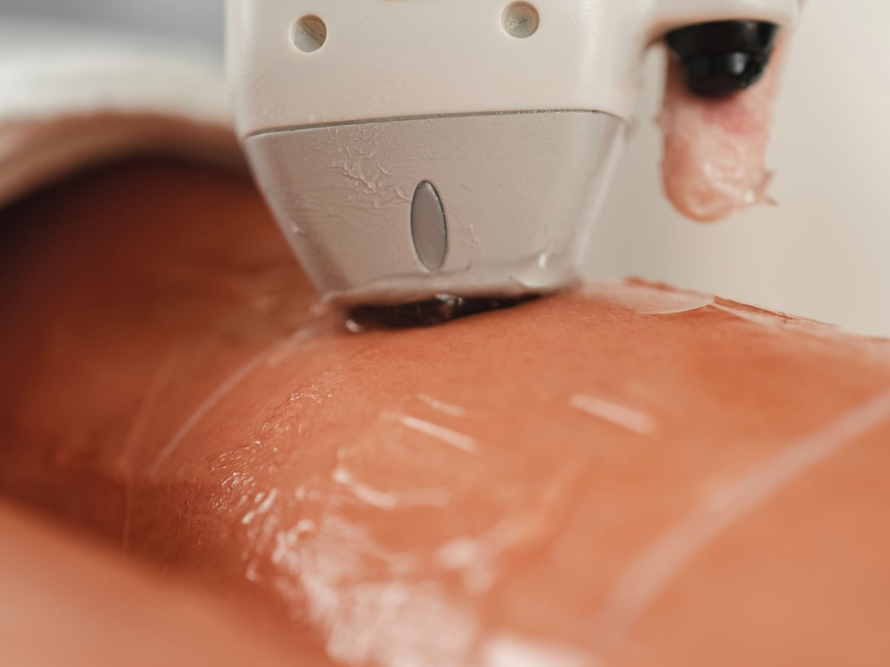
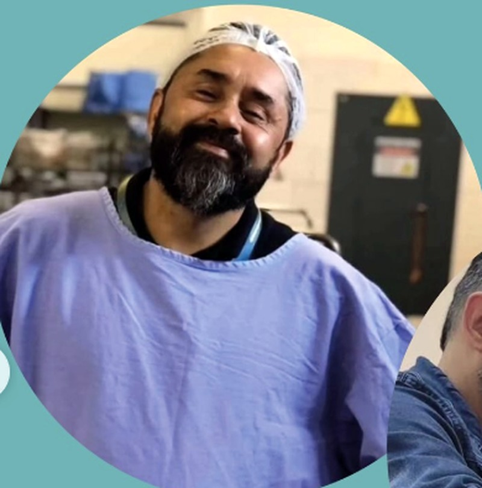

Autoclaves
Manutenção preventiva e corretiva de autoclaves de mesa, verticais, hospitalares e odontológicas.

Manutenção preventiva e corretiva de equipamentos para clínicas de estética, hospitais e consultórios odontológicos — com laudo técnico, rastreabilidade e atendimento em todo o Brasil.
Em clínicas, laboratórios e hospitais, um equipamento parado não é só um transtorno técnico. É atendimento cancelado, procedimento adiado e receita que deixa de entrar no mesmo dia.


Mais de 8 anos cuidando de equipamentos que não podem falhar — com processo claro, laudo técnico e atendimento em todo o Brasil, partindo da nossa base em Santa Maria (RS).
Mais do que consertar equipamentos, cuidamos da continuidade do seu atendimento.
Menos equipamento parado, mais dias de atendimento sem interrupção.
Equipamentos confiáveis para pacientes e para a sua equipe técnica.
Laudos e calibrações dentro das normas ANVISA e ABNT, prontos para fiscalização.
Manutenção preventiva evita reparos emergenciais e trocas antecipadas de equipamento.
Diagnóstico rápido e prazos claros antes de qualquer serviço ser iniciado.
Base em Santa Maria (RS), com atendimento programado em todo o Brasil.
Atendimento especializado para os equipamentos mais críticos da sua rotina — hospitalares, odontológicos, laboratoriais e de estética.
Manutenção preventiva e corretiva de autoclaves de mesa, verticais, hospitalares e odontológicas.
Camas elétricas, manuais, Fowler e de UTI — inspeção completa e reparo com segurança para o paciente.

Manutenção e calibração de centrífugas de bancada, refrigeradas e microcentrífugas.

Manutenção de focos de teto, parede e LED, garantindo iluminação precisa em cada procedimento.

Manutenção preventiva, corretiva e calibração de equipamentos críticos de suporte à vida.

Criolipólise, radiofrequência, laser, ultrassom e outros equipamentos da sua clínica de estética.

Atuamos há mais de 8 anos ao lado de clínicas de estética, laboratórios e hospitais, garantindo eficiência e segurança nos equipamentos que sustentam o dia a dia do seu negócio — com base em Santa Maria (RS) e atendimento em todo o Brasil.
Estamos reunindo os relatos de quem já confia na Lara Tec em todo o Brasil. Este espaço já está pronto para recebê-los.
Sim. Nossa base é em Santa Maria (RS), mas atendemos clientes em todo o Brasil, com atendimento programado conforme a localização do equipamento.
Sim. Nossos laudos seguem as normas ANVISA e ABNT aplicáveis a cada tipo de equipamento, com rastreabilidade dos resultados.
Depende do equipamento e do problema identificado. Após o diagnóstico, você recebe um prazo claro antes de qualquer serviço ser iniciado.
É simples: você chama no WhatsApp, descreve o equipamento e o problema, e agendamos a visita técnica.
Fale agora com a Lara Tec e garanta seu orçamento ou visita técnica.